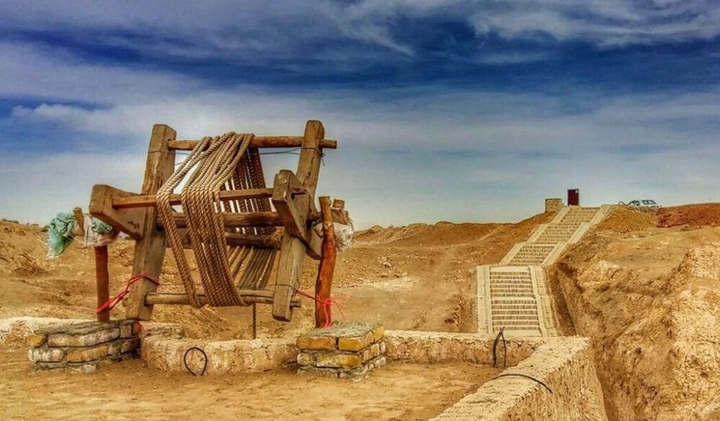
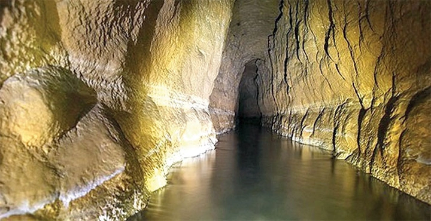
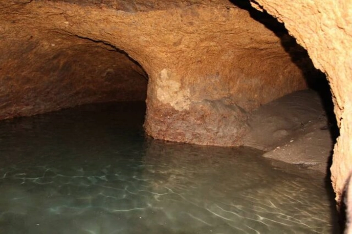

Hệ thống Qanat của Ba Tư – Kỳ quan dẫn nước dưới lòng đất tồn tại hơn 2.000 năm
Giữa vùng đất khô cằn của Trung Đông, nơi ánh mặt trời rực cháy và những cơn gió sa mạc cuốn theo cát bụi không hồi kết, có một kỳ quan ít người biết đến — Qanat, hệ thống dẫn nước ngầm kỳ diệu được người Ba Tư cổ phát minh cách đây hơn 2.700 năm.
Không cần máy bơm, không cần điện, Qanat vẫn vận hành đều đặn, dẫn dòng nước mát lành từ sâu trong lòng đất đến ruộng đồng, vườn cây và cả thành phố. Công trình này không chỉ là minh chứng cho trí tuệ kỹ thuật của con người cổ đại, mà còn là biểu tượng của sự hài hòa giữa con người và tự nhiên, nơi khoa học, địa lý và sinh tồn giao thoa một cách tinh tế.
Hôm nay hãy cùng TrithucWorld khám phá về hệ thống dẫn nước ngầm Qanat của người Ba Tư cổ đại nhé!
1. Giới thiệu tổng quan về hệ thống Qanat
Hệ thống Qanat là một trong những kỳ quan kỹ thuật cổ xưa nhất của nhân loại, được thiết kế để dẫn nước ngầm từ các vùng núi cao xuống đồng bằng khô hạn thông qua mạng lưới hầm ngầm kéo dài hàng chục, thậm chí hàng trăm kilomet. Không có máy bơm, không có động cơ, Qanat hoạt động hoàn toàn nhờ vào lực trọng trường tự nhiên, cho phép nước chảy đều đặn từ mạch ngầm đến bề mặt mà không cần bất kỳ năng lượng nhân tạo nào.
Trong thời kỳ đế chế Ba Tư cổ (nay là Iran), nơi phần lớn lãnh thổ là sa mạc và bán sa mạc, nguồn nước luôn là yếu tố quyết định sự sống còn của con người. Qanat ra đời như một giải pháp kỹ thuật mang tính cách mạng, giúp người dân khai thác nước ngầm một cách bền vững và thông minh, vừa đủ cho nhu cầu sinh hoạt, nông nghiệp và tích trữ, mà không làm tổn hại đến hệ sinh thái dưới lòng đất.
Không chỉ là công trình thủy lợi, Qanat còn là nền tảng của sự thịnh vượng đô thị cổ đại. Nhờ hệ thống này, những thành phố như Yazd, Kerman, Kashan và Gonabad – vốn nằm giữa sa mạc khô nóng – vẫn có thể phát triển rực rỡ, trở thành trung tâm thương mại và văn hóa quan trọng trên Con đường Tơ lụa. Nhiều nhà sử học cho rằng, nếu không có Qanat, nền văn minh Ba Tư sẽ không thể hình thành và phát triển mạnh mẽ như vậy.

Qanat thể hiện tầm nhìn vượt thời đại của người Ba Tư trong việc chung sống hài hòa với tự nhiên. Thay vì cưỡng ép khai thác nguồn nước một cách cạn kiệt, họ chọn cách “lắng nghe” địa hình, mạch nước, độ dốc và khí hậu để thiết kế hệ thống phù hợp với từng vùng. Chính tư duy sinh thái này khiến Qanat trở thành biểu tượng của kỹ thuật bền vững đầu tiên trong lịch sử nhân loại — một di sản kỹ thuật vẫn còn giá trị đến ngày nay, trong bối cảnh toàn cầu đang tìm kiếm giải pháp đối phó với khủng hoảng nước và biến đổi khí hậu.
Trên thực tế, nhiều hệ thống Qanat cổ đại ở Iran vẫn hoạt động ổn định sau hơn 2.000 năm, cung cấp nước cho hàng chục nghìn người dân. Điều này chứng minh rằng công trình này không chỉ là di sản lịch sử, mà còn là mô hình hoàn hảo của kỹ thuật – tự nhiên – con người hòa làm một, vận hành trơn tru qua bao thế kỷ.
2. Nguồn gốc và lịch sử phát triển của Qanat
Hệ thống Qanat được cho là xuất hiện vào khoảng thế kỷ VII trước Công nguyên, dưới thời đế chế Achaemenid – triều đại hùng mạnh đầu tiên của Ba Tư cổ. Trong bối cảnh khí hậu khô nóng, đất đai cằn cỗi và lượng mưa ít ỏi, người Ba Tư đã phát minh ra phương thức dẫn nước ngầm từ các dãy núi xa xôi về đồng bằng – nơi dân cư tập trung sinh sống và canh tác.
Khác với những công trình xây dựng để thể hiện quyền lực như kim tự tháp hay đền đài, Qanat mang tính thực dụng thuần túy nhưng lại thể hiện trí tuệ vượt thời đại, vì nó không chỉ giúp tồn tại mà còn tạo nền tảng cho sự phát triển của một nền văn minh.
Từ Ba Tư, kỹ thuật Qanat nhanh chóng lan tỏa khắp thế giới cổ đại. Những người thợ đào hầm (gọi là Muqannis) được xem như những “kỹ sư thủy lợi đầu tiên” trong lịch sử. Họ theo chân các đoàn thương nhân và binh lính Ba Tư đến Ai Cập, Syria, Oman, Algeria, thậm chí đến tận Tây Ban Nha – nơi công nghệ này sau đó hòa quyện với hệ thống aqueduct của người La Mã.
Trải qua hơn 2.700 năm lịch sử, dấu tích của Qanat vẫn còn hiện diện ở nhiều nơi trên thế giới. Một số Qanat ở Iran như Gonabad Qanat vẫn hoạt động liên tục suốt hơn hai thiên niên kỷ – minh chứng cho độ bền, tính chính xác và sự tài tình của kỹ thuật cổ đại này.
Hệ thống Qanat không chỉ là công trình thủy lợi, mà còn là di sản văn minh nhân loại – tượng trưng cho khả năng thích ứng và sáng tạo của con người trong điều kiện khắc nghiệt. Chính vì vậy, năm 2016, UNESCO đã công nhận 11 hệ thống Qanat cổ tại Iran là Di sản Thế giới, ghi nhận tầm quan trọng lịch sử, khoa học và văn hóa của chúng.
3. Cấu trúc và nguyên lý hoạt động của Qanat
Thoạt nhìn, Qanat có vẻ đơn giản, nhưng ẩn sâu bên trong là một hệ thống kỹ thuật cực kỳ tinh vi và chính xác. Cấu trúc cơ bản của Qanat bao gồm ba phần chính: miệng giếng chính (mother well), đường hầm ngầm (tunnel) và các giếng thông khí dọc theo trục (vertical shafts).
Giếng chính thường được khoan sâu xuống đến mạch nước ngầm ở vùng núi, nơi có nguồn nước ổn định quanh năm. Từ đó, người Ba Tư đào một đường hầm dốc nhẹ (khoảng 1m mỗi km) dẫn nước đi xa hàng chục kilomet đến nơi tiêu thụ.
Dọc theo đường hầm là chuỗi giếng thẳng đứng cách nhau 20–50 mét, vừa để thông gió, vừa giúp công nhân đưa đất đá lên mặt đất trong quá trình thi công. Nước sau khi chảy ra khỏi hầm sẽ được thu gom vào các hồ chứa hoặc kênh tưới tiêu phục vụ nông nghiệp, sinh hoạt và tích trữ.
Điều đáng kinh ngạc là toàn bộ hệ thống này hoạt động hoàn toàn nhờ trọng lực, không tiêu tốn năng lượng, không gây thất thoát nước qua bốc hơi, và có thể tự duy trì hàng nghìn năm.
Bí quyết thành công của Qanat nằm ở sự am hiểu địa chất và thủy văn tuyệt vời. Người Ba Tư cổ biết cách chọn độ dốc vừa đủ để nước chảy ổn định, không gây xói mòn, đồng thời giữ nhiệt độ nước luôn mát mẻ. Nhiều Qanat còn được thiết kế uốn lượn để tránh các tầng đất yếu hoặc đá cứng, cho thấy kỹ năng đo đạc, tính toán và thi công chính xác đến từng centimet – điều mà ngay cả các kỹ sư hiện đại cũng phải ngưỡng mộ.
4. Kỹ thuật thi công và công cụ sử dụng
Việc xây dựng một Qanat đòi hỏi trình độ kỹ thuật, sức bền và lòng can đảm phi thường. Những người thợ đào hầm cổ đại phải làm việc trong điều kiện cực kỳ khắc nghiệt – dưới lòng đất chật hẹp, thiếu ánh sáng, không khí loãng và nhiệt độ cao. Họ chỉ có trong tay những công cụ thô sơ như cuốc, xẻng, đèn dầu và ròng rọc, nhưng vẫn có thể tạo nên công trình chính xác đến kinh ngạc.
Công việc bắt đầu bằng việc xác định vị trí mạch nước ngầm, dựa vào quan sát địa hình, thực vật và kinh nghiệm truyền đời. Sau đó, họ đào giếng mẹ (mother well) sâu hàng chục mét để tiếp cận nguồn nước. Tiếp theo là đường hầm dẫn nước, được đo đạc bằng dây và quả dọi để đảm bảo độ dốc cực nhỏ nhưng ổn định.

Trong quá trình đào, các giếng thông khí được mở dọc theo trục để vận chuyển đất đá, đồng thời tránh sụp hầm. Công tác này đòi hỏi sự phối hợp nhịp nhàng của hàng chục công nhân – mỗi người đảm nhiệm một khâu trong chuỗi thi công kéo dài hàng tháng, thậm chí hàng năm.
Đáng chú ý, người Ba Tư cổ đã phát triển hệ thống đo độ nghiêng và định vị bằng sao trời để xác định hướng đào trong bóng tối – một kỹ thuật mà nhiều nhà khảo cổ gọi là “nghệ thuật ngầm” của thế giới cổ đại. Độ chính xác của các Qanat cổ, đôi khi chỉ sai lệch chưa đến 10 cm trên quãng đường dài 10 km, là minh chứng cho sự tinh tế và tay nghề bậc thầy của những người Muqannis.
5. Vai trò của Qanat trong nông nghiệp và đời sống xã hội
Qanat không chỉ là công trình kỹ thuật, mà còn là huyết mạch của cả nền văn minh Ba Tư. Nhờ nguồn nước ổn định, các vùng sa mạc khô cằn đã biến thành những ốc đảo xanh trù phú, nơi cây cối sinh sôi và con người định cư lâu dài. Hệ thống Qanat cung cấp nước cho ruộng lúa mì, vườn nho, vườn chà là, và hàng loạt cây trồng đặc trưng của vùng Trung Đông, tạo nên nền nông nghiệp thịnh vượng kéo dài hàng nghìn năm.
Không dừng lại ở nông nghiệp, Qanat còn là nền tảng của đời sống đô thị cổ. Nhiều thành phố như Yazd và Kerman được quy hoạch xoay quanh các tuyến Qanat, với kênh dẫn nước chạy qua nhà tắm công cộng, đài phun nước, vườn trong nhà (Persian garden) và khu chợ. Ở các làng mạc, nước từ Qanat được phân chia công bằng thông qua hệ thống đo thời gian tưới gọi là “Farsang” – thể hiện tính tổ chức xã hội cao và tinh thần cộng đồng mạnh mẽ của người Ba Tư.
Ở góc độ văn hóa, Qanat được xem như “nguồn sống thiêng liêng”, tượng trưng cho mối liên kết giữa con người và tự nhiên. Nhiều nghi lễ truyền thống, lễ tạ ơn và phong tục cưới hỏi đều gắn liền với nguồn nước từ Qanat. Sự tồn tại của hệ thống này không chỉ duy trì sự sống, mà còn định hình bản sắc, niềm tin và thậm chí cả quan niệm triết học về sự cân bằng trong vũ trụ của người Ba Tư cổ đại.
6. Cấu trúc địa kỹ thuật và độ bền vững của hệ thống Qanat
Một trong những điểm khiến Qanat trở thành kỳ quan kỹ thuật của thế giới cổ đại chính là cấu trúc địa kỹ thuật tinh vi và độ bền đáng kinh ngạc. Các kỹ sư Ba Tư cổ đã hiểu rõ đặc điểm địa tầng, chọn chính xác vị trí đào hầm theo độ dốc tự nhiên để nước có thể chảy mà không cần bơm. Mỗi đường hầm Qanat thường dài từ vài kilomet đến hơn 70 km, có độ chênh cao chính xác chỉ vài mét từ đầu nguồn đến miệng giếng.
Vật liệu xây dựng chủ yếu là đất sét và đá tự nhiên — những vật liệu có khả năng chống sụt lở tốt và bền vững theo thời gian. Ngoài ra, hệ thống còn được thiết kế có các giếng thông khí định kỳ, giúp cân bằng áp suất và tạo điều kiện cho người bảo trì xuống kiểm tra. Nhờ đó, nhiều Qanat vẫn còn hoạt động ổn định sau hơn 2.000 năm, cho thấy sự kết hợp giữa kiến thức địa chất, kỹ thuật và kinh nghiệm thực tiễn vượt xa thời đại của nó.
7. Qanat và ảnh hưởng đến đời sống văn hóa – xã hội
Qanat không chỉ mang lại nguồn nước mà còn hình thành nên cả một nền văn hóa xoay quanh việc sử dụng và quản lý nước. Ở các vùng sa mạc Iran, nước từ Qanat được phân chia công bằng giữa các hộ dân theo thời gian trong ngày, gọi là “nước giờ”. Mỗi cộng đồng có người trông coi Qanat gọi là mirab, người có trách nhiệm duy trì hoạt động, điều tiết nước và giải quyết tranh chấp.
Hệ thống quản lý này không chỉ phản ánh tư duy cộng đồng cao mà còn thể hiện triết lý sống hài hòa với thiên nhiên của người Ba Tư cổ. Ở nhiều nơi, Qanat còn gắn liền với tín ngưỡng — nước được xem là món quà thiêng liêng của đất trời, biểu tượng cho sự sống và thịnh vượng. Có thể nói, Qanat không chỉ là công trình kỹ thuật mà còn là một phần linh hồn của văn minh Ba Tư.
8. So sánh Qanat với các hệ thống dẫn nước cổ khác trên thế giới
Khi so sánh với các công trình thủy lợi cổ khác như hệ thống aqueduct của La Mã, kênh đào Ai Cập hay giếng bậc Ấn Độ, Qanat thể hiện một triết lý khác biệt: sự tiết chế và bền vững. Trong khi người La Mã xây dựng những đường ống và cầu dẫn nước quy mô lớn để phục vụ đô thị, người Ba Tư lại chọn phương án ẩn mình dưới lòng đất, tránh bốc hơi và bảo vệ nguồn nước khỏi nắng nóng khắc nghiệt.

Điều này phản ánh sự thích nghi tuyệt vời với môi trường sa mạc. Qanat không tìm cách chế ngự thiên nhiên mà tận dụng quy luật tự nhiên – trọng lực, địa tầng, và độ dốc – để phục vụ con người. Chính triết lý này khiến nhiều nhà nghiên cứu xem Qanat là một hình mẫu cho kỹ thuật “thân thiện với môi trường” ngay từ hàng nghìn năm trước khi khái niệm đó được định hình trong thời hiện đại.
9. Ứng dụng của mô hình Qanat trong thế kỷ 21
Trong bối cảnh biến đổi khí hậu và khan hiếm nước ngày nay, nguyên lý của Qanat đang được nhiều quốc gia nghiên cứu áp dụng lại. Các vùng khô hạn ở Bắc Phi, Trung Đông, thậm chí là châu Mỹ Latin, đã thử nghiệm mô hình “Qanat hiện đại” – sử dụng công nghệ khoan sâu, ống dẫn composite và cảm biến tự động để dẫn và giám sát nước ngầm một cách bền vững.
Các kỹ sư môi trường nhận ra rằng, dù công nghệ hiện đại có thể tăng năng suất, nhưng cốt lõi vẫn nằm ở triết lý sử dụng nước có chừng mực, bảo tồn tài nguyên cho các thế hệ sau – điều mà Qanat đã thực hiện hoàn hảo từ hàng thiên niên kỷ trước. Việc hồi sinh Qanat không chỉ là sao chép công nghệ cổ mà còn là sự trở lại của tư duy sinh thái trong quy hoạch nước toàn cầu.
10. Giá trị di sản và ý nghĩa toàn cầu của Qanat
Ngày nay, nhiều hệ thống Qanat tại Iran, Syria và Oman đã được UNESCO công nhận là Di sản Thế giới, không chỉ vì giá trị kỹ thuật mà còn bởi tầm ảnh hưởng văn minh của chúng. Qanat là minh chứng cho khả năng sáng tạo vô biên của con người khi đối mặt với thiên nhiên khắc nghiệt — sử dụng tri thức, kinh nghiệm và tinh thần cộng đồng để tạo nên sự thịnh vượng lâu dài.
Hơn thế nữa, Qanat còn mang thông điệp mạnh mẽ cho thời đại hiện nay: công nghệ chỉ thực sự có ý nghĩa khi nó phục vụ cho sự hài hòa giữa con người và môi trường. Dù là sản phẩm của hàng nghìn năm trước, hệ thống này vẫn mang tính thời sự — nhắc nhở nhân loại rằng sự bền vững không đến từ sức mạnh, mà đến từ sự hiểu biết và tôn trọng thiên nhiên.